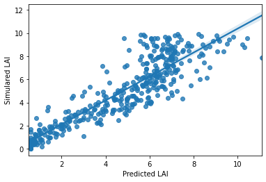

CODE
JAX
Autograd and XLA toguether for high-performance machine learning research.
With Autograd
Automatically differentiate native Python and NumPy functions.
grad = Supports reverse mode differentiation (backpropagation)
With XLA
Compile and run NumPy programs on GPUs and TPUs. Compilation under the hood by default.
Tensorflow
tf.GradientTape(): For automatic differentiation computing the gradient of a computation with respect to
its input variables. "Tape" records all the operations executed.
Import the necessary packages
| import tensorflow as tf
from tensorflow.keras.optimizers import Adam
from tensorflow.keras.initializers import RandomNormal
from tensorflow.keras.layers import Dense
from tensorflow.keras.models import Sequential
|
Create a dense neural network with Spectral channels as input to infer LAI values.
| X_train, X_val, y_train, y_val = train_test_split(X_spec, y_lai,
train_size=0.8, test_size=0.2,
random_state=0)
|
Create the model
1
2
3
4
5
6
7
8
9
10
11
12
13
14
15
16
17 | # Hyperparameters
batch_size = 16
epochs = 150
optimizer = Adam(lr=0.01)
weight_init = RandomNormal()
modelLoss = tf.keras.losses.MeanSquaredError()
metricLoss = tf.keras.metrics.MeanSquaredError()
val_mse_loss = tf.keras.metrics.MeanSquaredError()
def get_net(weight_init):
net = Sequential()
net.add(Dense(16, kernel_initializer=weight_init, activation='relu', input_dim=10))
net.add(Dense(16, kernel_initializer=weight_init, activation='relu'))#kernel_initializer=weight_init
net.add(Dense(8, kernel_initializer=weight_init, activation='relu'))
net.add(Dense(1))
return net
|
Start the training process
1
2
3
4
5
6
7
8
9
10
11
12
13
14
15
16
17
18
19
20
21
22
23
24
25
26
27
28
29
30
31
32
33
34
35
36
37
38
39
40
41
42
43
44
45
46
47
48
49
50
51
52
53
54
55
56
57
58
59
60
61
62
63
64
65
66
67
68
69
70
71
72
73
74
75
76
77
78
79
80
81
82
83
84 | # Load the defined DNN model
model = get_net(weight_init)
# Initialize control training values
train_loss_results = []
validation_loss_results = []
stop = False
last_improvement = 0
last_improvement_total = 0
epoch = 0
best_loss = 100
# Calculate batches for training and validation
bat_per_epoch = math.floor(len(X_train) / batch_size)
bat_per_epoch_val = math.floor(len(X_val) / batch_size)
# Training loop
while epoch < epochs and stop == False:#for epoch in range(epochs):
#print(f'Epoch: {epoch}/{epochs}')
epoch_train_loss_avg = tf.keras.metrics.Mean()
epoch_val_loss_avg = tf.keras.metrics.Mean()
# Run train batch loop
for i in range(1, bat_per_epoch):
n = i*batch_size
X_batch = X_train[n:n+batch_size]#X_train[ids_train[n:n+batch_size]]
y_batch = y_train[n:n+batch_size]#y_train.take(ids_train[n:n+batch_size])
with tf.GradientTape() as tape:
# Make prediction
pred_y = model(X_batch)
# Calculate loss
train_loss = modelLoss(tf.expand_dims(y_batch.values,axis=1), pred_y)
# Calculate gradients
model_gradients = tape.gradient(train_loss, model.trainable_variables)
# Update model
optimizer.apply_gradients(zip(model_gradients, model.trainable_variables))
# Keep history of loss values
epoch_train_loss_avg.update_state(train_loss)
#End training batch
train_loss_results.append(epoch_train_loss_avg.result())
# Run a validation loop at the end of each training epoch
for i in range(bat_per_epoch_val):
n = i*batch_size
X_batch = X_val[n:n+batch_size]#X_val[ids_val[n:n+batch_size]]
y_batch = y_val[n:n+batch_size]#y_val.take(ids_val[n:n+batch_size])
# Make prediction
val_pred = model(X_batch)
val_loss = val_mse_loss(tf.expand_dims(y_batch.values,axis=1), val_pred)
# Keep history of validation loss values
epoch_val_loss_avg.update_state(val_loss)
# Read out training results
#(f'Validation loss: {val_loss}')
#End validation batch
validation_loss_results.append(epoch_val_loss_avg.result())
print(f'Epoch: {epoch}/{epochs} Loss:{epoch_train_loss_avg.result()}, Val_loss: {epoch_val_loss_avg.result()}')
# Custom callback functions
if epoch_val_loss_avg.result() < best_loss:
best_loss = epoch_val_loss_avg.result()
last_improvement = 0
else:
last_improvement += 1
# Reduce learning rate if validation loss does not decrease for 10 epochs
if last_improvement > 10:
lr = optimizer.lr.numpy()
optimizer.lr.assign(lr/10)
print(f'No improvement, reduce learning rate {lr/10}')
last_improvement_total = last_improvement
last_improvement = 0
# Stop training if validation loss does not decrease for 20 epochs
if last_improvement_total > 20:
print(f'No improvement after 20 epochs. Stop training')
stop = True
epoch += 1
|
